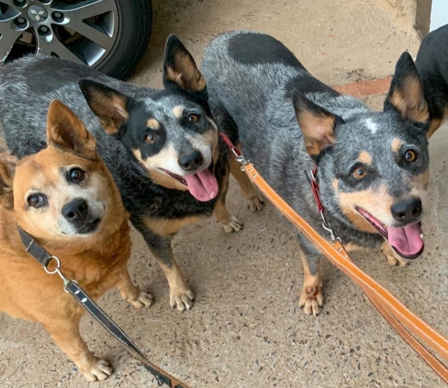
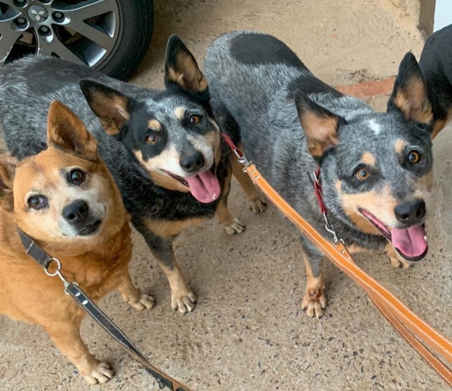
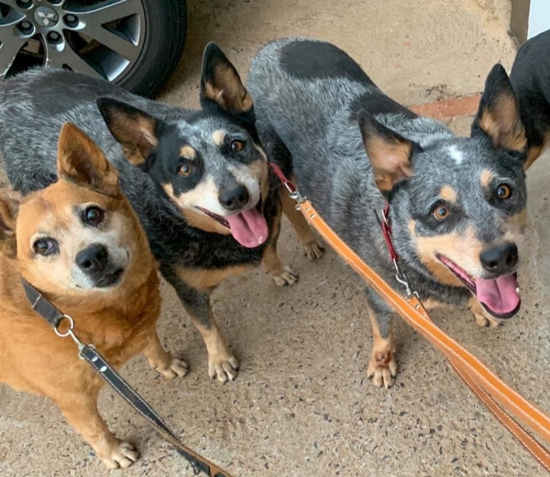

Amamos os nossos clientes
 

O Serendipity encantando animais nasceu no ano de 2011 a partir do sonho da proprietária e médica-veterinária em conciliar a sua paixão à sua profissão. O conceito era ter um espaço onde os cães pudessem ficar soltos, interagindo entre eles e, principalmente, se sentirem em casa. Dessa forma, transmitir confiança e conforto aos tutores.
Segunda a sexta-feira: 8h às 17h30
Sábado e domingo: fechado

O profissionalismo da equipe é exemplar em todos os aspectos. Desde a recepção até o cuidado com meu animal, cada etapa foi realizada com eficiência e dedicação. Com certeza, voltarei sempre.
O serviço prestado pelo pet shop foi verdadeiramente notável. Ficamos muito satisfeitos com a organização impecável e a atenção especializada aos animais. Recomendo sem hesitação!
Superou todas as minhas expectativas com um atendimento excepcional. Em geral, a equipe foi extremamente atenciosa, prestativa e demonstrou um cuidado genuíno com o meu animal de estimação.